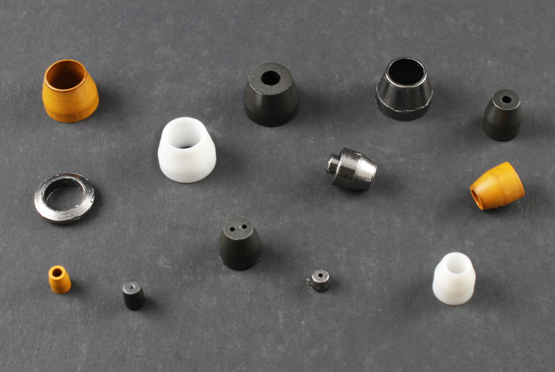
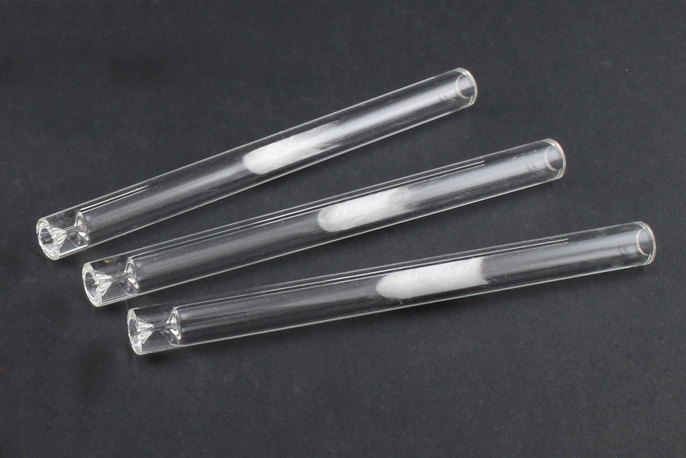
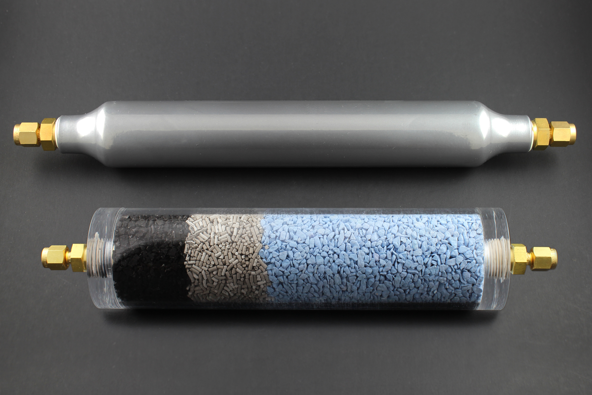
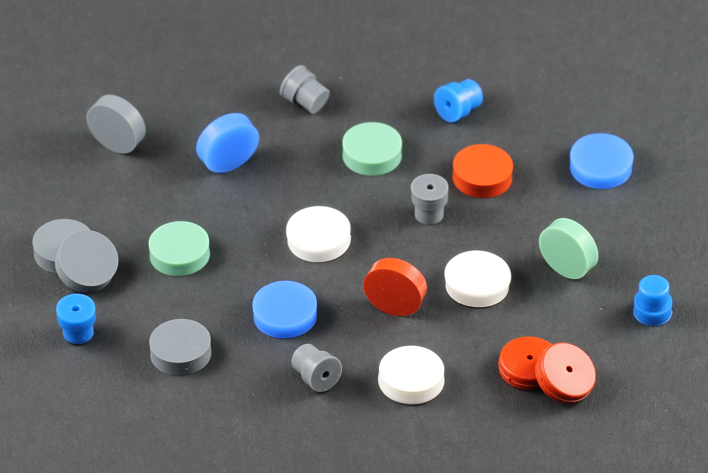
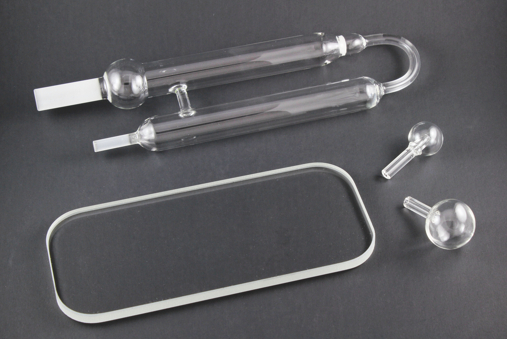
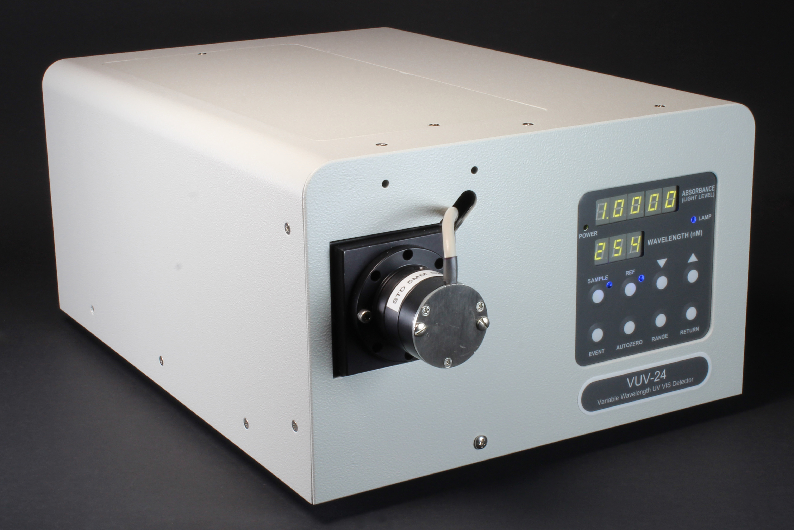
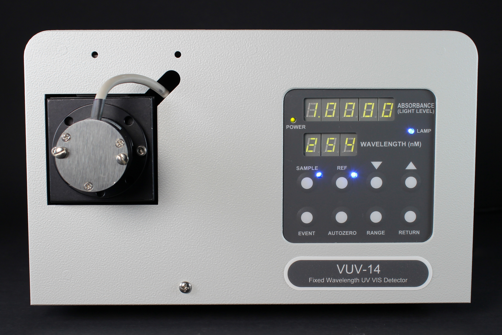
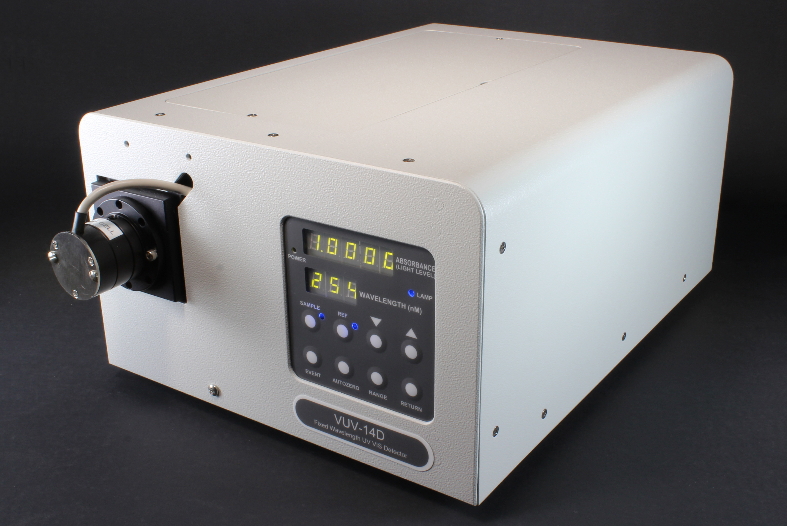

Ferrules for Chromatography.
GC FERRULES

A large variety of standard and custom liners for chromatography.
GC INLET LINERS

Comprehensive line of vials, caps & inserts used in autosampling and headspace analysis.
VIALS, CAPS, & INSERTS

For removal of moisture, hydrocarbon, and oxygen from carrier gases.
GAS PURIFICATION

GC Septa.
GC SEPTA

Custom glass fabrication and repair.
GLASS FABRICATION

Low Cost Fixed Wavelength Detector.
EUV DETECTOR

Variable wavelength UV/VIS detector.
VUV-24 DETECTOR

Fixed 245nm wavelength UV detector.
VUV-14 DETECTOR

Filter selectable fixed wavelength UV detector with D2 Lamp.
VUV-14D DETECTOR

Dual Beam Fixed Wavelength Absorbance Detector.